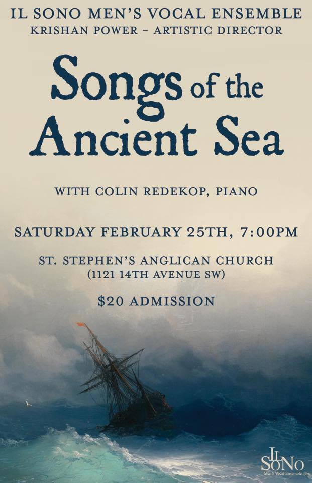

Il Sono Men's Vocal Ensemble
Il Sono is a Calgary-based men’s vocal ensemble dedicated to music-making of the highest calibre.
Upcoming Concerts
Songs of the Ancient Sea
Shanties and ballads celebrating the ocean; choral song inspired by wind, waves and sail: Join Il Sono as we dive into the rich tradition of maritime music for men's choir.